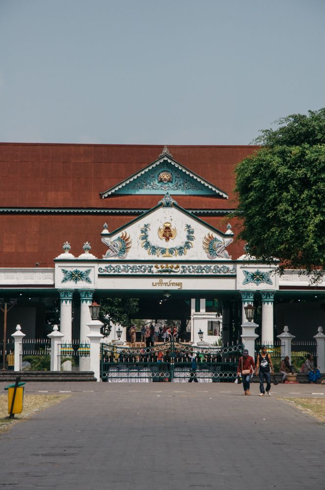

Keraton Yogyakarta
Salah satu tempat wisata budaya lainnya di Yogyakarta adalah Keraton Yogyakarta. Keraton ini adalah salah satu bangunan bersejarah kesultanan Yogyakarta yang ditempati oleh Sultan dan keluarga Sultan. Di keraton ini juga terdapat museum yang memamerkan barang-barang kesultanan Yogyakarta dari barang rumah tangga sampai barang-barang unik yang sebagian merupakan hadiah dari raja Eropa.
Jika ingin berkunjung ke Keraton Yogyakarta, jangan datang terlalu sore karena jam operasional Keraton untuk keperluan wisata hanya berkisar dari pukul 09.00-14.00. Jangan sampai lupa membawa perangkat kamera untuk dapat mengabadikan momen ketika berada di ‘istana’. Walaupun bukan sebagai raja, namun berada di istana sang rasa merupakan sebuah kehormatan tersendiri. Apabila kita hendak membawa kamera, akan dikenakan biaya yang tidak mahal yaitu sebesar Rp 1.000,-. Tentunya harga tersebut tergolong murah mengingat momen berharga yang dapat diabadikan di tempat ini. Tidak perlu risau bahwa kunjungan di siang hari akan membakar kulit, bangunan Keraton sendiri sangat teduh dengan perlindungan pepohonan yang rindang dan dapat menahan teriknya sinar matahari.
Berwisata bukan hanya tentang pemuasan kesenangan pribadi semata. Selalu ada pelajaran berupa pengetahuan maupun moral yang dapat dipetik dalam setiap jarak yang telah ditempuh. Berkunjung ke Keraton Yogyakarta, misalnya. Kita dapat mempelajari arti dedikasi melalui sikap para abdi dalem. Selain itu, tentunya kita juga dapat mengerti dan menghargai berbagai macam peninggalan sejarah serta budaya jawa.
Berikut sekilas suasana di Keraton Yogyakarta sks ks dkskskdubs kdkds kd sk k sd betapa diperbsera oleh keberadaan
Source: Youtube